Dheeraj Kovoord\(^{a,*}\), Research
Team\(^{a}\)
\(^{a}\) Department of Computer
Science and Engineering, National Institute of Technology Karnataka,
Surathkal, India
\(^{*}\) Corresponding author.
Email: dheeraj.kovoord@example.edu
Temporal graph representations of network telemetry promise to capture structural communication dynamics that flow-level classifiers overlook. However, evaluating temporal link prediction in network security entails methodological pitfalls that risk producing illusory performance claims. In this study, we empirically investigate temporal link prediction and multi-scale graph dynamics across two distinct network security datasets: APEX-IDS2026 (a 44-day continuous hybrid-cloud telemetry stream comprising 69.1 million flows with cryptographically verified Zenodo archive checksums) and CIC-IDS2017 (a 5-day laboratory cyber-range testbed evaluated on its single chronological daily test transition from Day 3 to Day 4). First, we compute multi-scale graph dynamics across six dataset-window configurations spanning four temporal window scales (1-hour, 6-hour, 12-hour, and 24-hour windows) and discover that CIC-IDS2017 exhibits higher measured daily edge novelty (68.09% vs. 56.25%) and symmetric turnover (81.61% vs. 72.71% Jaccard distance) than APEX-IDS2026, countering the prior assumption that this cyber-range testbed capture is topologically static. Second, we systematically compare two evaluation protocols: Setting A (Hard Historical Negatives), which evaluates edges observed in earlier telemetry that became inactive, and Setting B (Mixed Random Negatives), which samples non-edges uniformly from active-node pairs (\(V_t \times V_t\)). Across eight evaluated predictors over five fixed random seeds, we demonstrate that random negative sampling inflates the precision of historical memory baselines (Persistence, EdgeBank-binary, EdgeBank-tw) to near-perfection (\(\ge 99.8\%\)), masking critical link-extinction failures: under Setting A, Persistence precision falls to 48.50% on CIC-IDS2017 and 89.74% on APEX-IDS2026, while unbounded memory (EdgeBank-∞) collapses to 34.43% and 47.02% precision—falling below 50% precision on the 1:1 balanced candidate benchmark. Third, under high-churn conditions (CIC-IDS2017 Setting A), Common Neighbors outperforms Persistence (45.24% vs. 35.22% F1), while time-windowed memory (EdgeBank-tw, \(W=2\)) achieves the highest F1 (69.78%) on APEX-IDS2026. In addition to thresholded F1, we report continuous threshold-free metrics (ROC-AUC and Average Precision), resolving baseline artifacts such as Jaccard’s threshold-induced zero F1. Finally, we transparently report the training dynamics of EvolveGCN-H on structural degree features, documenting seed sensitivity, optimization instability, and subsequent pre-sigmoid logit saturation associated with degenerate all-zero or all-one outputs without asserting unproven causal links. We emphasize that five seeds on CIC-IDS2017’s daily split measure candidate-sampling and run variability across a single temporal transition rather than generalization across independent test periods. We restrict all conclusions to the evaluated datasets and temporal splits, and provide reproducible, deterministic candidate-sampling and baseline implementations.
Keywords: Temporal Link Prediction; Network Security Telemetry; Dynamic Graphs; Negative Sampling; Heuristic Baselines; EvolveGCN; Graph Dynamics.
Intrusion detection systems (IDS) increasingly explore graph-based representations of network telemetry, modeling IP endpoints as nodes and communication sessions as temporal edges. Dynamic graph neural networks (GNNs), such as EvolveGCN, have been proposed to predict future interaction topology and identify anomalous edge formations. However, recent empirical audits in the broader dynamic graph literature have highlighted severe evaluation vulnerabilities: complex temporal GNNs frequently underperform simple memorization heuristics (such as Persistence or EdgeBank) when evaluated under realistic conditions, while flawed negative candidate sampling protocols can artificially flatter model metrics.
In network security, these pitfalls are magnified by extreme network scale, non-stationary host behavior, and high topological churn. Two critical empirical questions emerge: 1. The Negative Sampling Illusion: Does the observed performance of link predictors reflect genuine topological understanding, or is it an artifact of sampling non-edges from a vast, sparse candidate universe where arbitrary endpoint pairs rarely interact? 2. Topological Dynamics vs. Memory: How does the rate of structural churn across time scales affect the viability of temporal heuristic baselines versus structural graph features?
In this paper, we conduct a controlled empirical evaluation of
temporal link prediction and topological dynamics, making the following
contributions: * Multi-Scale Graph Dynamics Audit: We
construct chronological snapshot sequences across six dataset-scale
configurations spanning four distinct window granularities (24h, 12h, 6h
for APEX-IDS2026; 24h, 6h, 1h for CIC-IDS2017). We measure directional
edge recurrence and novelty alongside symmetric turnover (canonical
Jaccard distance and Dice dissimilarity), establishing that CIC-IDS2017
exhibits higher edge churn than continuous enterprise telemetry, with
sub-daily variance driven by diurnal collection pauses. *
Separation of Negative Sampling Regimes: We formalize
and evaluate two candidate regimes: Setting A (Hard Historical
Negatives), which strictly tests expired historical
communication links (\(E_{\le t} \setminus
E_{t+1}\)), and Setting B (Mixed Random
Negatives), which evaluates non-edges among active snapshot
nodes (\(V_t \times V_t \setminus
E_{t+1}\)). We show that Setting B produces an illusion of
near-100% precision for memory baselines, whereas Setting A exposes
substantial precision degradation. * Controlled Five-Seed
Benchmark: We evaluate seven heuristic baselines—Persistence,
EdgeBank-∞ (binary and frequency), EdgeBank-tw (\(W=2\), binary), Common Neighbors
(directed), Jaccard Coefficient, and Adamic-Adar—alongside EvolveGCN-H
across five fixed random seeds ([42, 100, 123, 456, 999]).
Within each seed run, all eight models are evaluated on strictly
identical candidate sets without temporal leakage or negative padding,
while negative non-edge samples vary across seeds to measure
candidate-sampling variability. We report both thresholded
classification metrics (F1, precision, recall) and continuous ranking
metrics (ROC-AUC and Average Precision). * Transparent GNN
Stability Characterization: We document the training dynamics
and seed sensitivity of EvolveGCN-H when trained purely on topological
features, documenting optimization instability and subsequent logit
saturation extremes associated with degenerate all-zero or all-one
collapse without asserting an unverified causal mechanism. *
Explicit Boundary Delineation: We explicitly state what
this work does not claim: we do not claim to reconstruct
attack-generating processes counterfactually, we do not claim validated
causal defense intervention, and we do not claim that five random seeds
capture temporal invariance beyond the observed datasets.
The remainder of this paper is organized as follows: Section 2 reviews related literature on dynamic graph representation learning, evaluation pitfalls, and security telemetry. Section 3 formalizes the next-snapshot temporal link prediction problem, candidate sampling protocols, baseline models, adapted EvolveGCN-H architecture, and multi-scale graph dynamics metrics. Section 4 describes the datasets, provenance verifications, chronological partitioning, and experimental setup. Section 5 presents the empirical results across graph dynamics, link prediction benchmarks, and recurrent GCN optimization dynamics. Section 6 provides scientific discussion and resolves metric artifacts. Section 7 presents limitations and threats to validity, and Section 8 concludes the paper.
Dynamic graph representation learning models continuous-time or discrete-time network evolution. Discrete-time models, such as EvolveGCN (Pareja et al., 2020), evolve Graph Convolutional Network (GCN) parameters across time-steps using recurrent architectures (GRU or LSTM) driven by graph-level summaries. Self-attention architectures, such as DySAT (Sankar et al., 2020), instead capture dynamic node interactions across graph snapshots using joint structural and temporal attention mechanisms without recurrent parameter evolution. Continuous-time models, including TGAT (Xu et al., 2020) and TGN (Rossi et al., 2020), update node memory states upon individual edge arrival events. Comprehensive benchmarking suites such as DyGLib (Wang et al., 2023) and the Temporal Graph Benchmark (TGB; Huang et al., 2023) have standardized evaluation protocols across dynamic networks, highlighting that performance varies considerably with candidate sampling and temporal granularity.
Poursafaei et al. (2022) exposed a foundational issue in dynamic link prediction benchmarks: on many standard datasets, simple memorization baselines (termed EdgeBank) that predict the recurrence of previously observed edges often outperform sophisticated temporal GNNs. Furthermore, they demonstrated that standard negative sampling—drawing random non-edges uniformly from the node set—presents an artificially easy classification task, as random node pairs typically share no historical interaction context. Evaluating against “historical negatives” (edges active in the past but absent in the target snapshot) provides a substantially more rigorous test of temporal link extinction, an evaluation principle reinforced across diverse dynamic graph domains by the Temporal Graph Benchmark (Huang et al., 2023).
Graph learning for intrusion detection models IP communications to identify lateral movement, scanning, and exfiltration (Sharafaldin et al., 2018; Ferrag et al., 2022; Bilot et al., 2023). In a systematic survey, Bilot et al. (2023) categorized graph neural network architectures across network and host telemetry, highlighting recurring challenges in dynamic graph representation, scalability, and realistic evaluation. Furthermore, network intrusion detection is uniquely vulnerable to the base-rate fallacy (Axelsson, 2000): in real networks, communication graphs are exceptionally sparse, meaning that even a low false-positive rate produces an overwhelming volume of false alarms. Sommer and Paxson (2010) and Arp et al. (2022) emphasized that machine learning models in security must be evaluated with strict chronological realism, accounting for non-stationarity, sampling bias, class imbalance, and the absence of reliable causal ground truth.
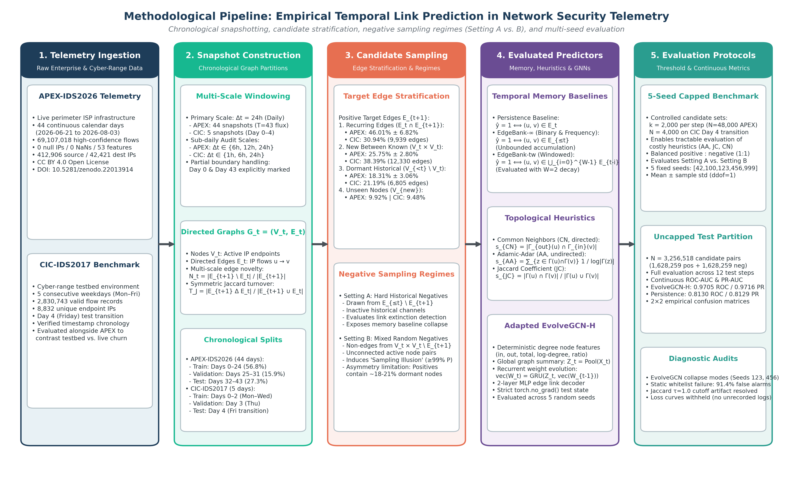
Let \(F = \{(u_i, v_i, t_i)\}\) be a chronological stream of network flows, where \(u_i \in \mathcal{V}\) is the source IP address, \(v_i \in \mathcal{V}\) is the destination IP address, and \(t_i \in \mathbb{R}^+\) is the flow start timestamp. Following standard temporal network formulations (Holme & Saramäki, 2012), given a temporal window size \(\Delta t\), we partition the timeline into discrete non-overlapping snapshots \(\mathcal{G} = (G_0, G_1, \dots, G_T)\).
Each snapshot \(G_t = (V_t, E_t)\) is a directed multigraph collapsed into unique directed edges: \[E_t = \{(u, v) \mid \exists (u, v, t_i) \in F \text{ with } t \cdot \Delta t \le t_i < (t+1) \cdot \Delta t\}\] \[V_t = \{u \mid \exists v, (u, v) \in E_t\} \cup \{v \mid \exists u, (u, v) \in E_t\}\] The historical graph up to time \(t\) is denoted \(G_{\le t} = (V_{\le t}, E_{\le t})\) where \(V_{\le t} = \bigcup_{\tau=0}^t V_\tau\) and \(E_{\le t} = \bigcup_{\tau=0}^t E_\tau\).
The prediction objective is to evaluate whether a candidate directed edge \((u, v)\) will appear in the subsequent snapshot \(G_{t+1}\), conditioning strictly on information available up to and including snapshot \(G_t\).
To prevent evaluation bias and future-information leakage, candidate positive edges in \(G_{t+1}\) are partitioned into four disjoint subsets: 1. Recurring Edges (\(E_{t+1}^{\text{rec}}\)): Edges active in both snapshots: \(E_{t+1} \cap E_t\). On APEX-IDS2026 test transitions, recurring edges account for \(46.01\% \pm 6.82\%\) of target edges; on the CIC-IDS2017 Day 4 transition, they represent \(30.94\%\) (9,939 of 32,120 edges). 2. New Edges Between Concurrently Active Known Nodes (\(E_{t+1}^{\text{active}}\)): Newly formed edges where both endpoints were active in the immediately preceding snapshot: \(\{(u, v) \in E_{t+1} \setminus E_t \mid u, v \in V_t\}\). These account for \(25.75\% \pm 2.80\%\) of target edges on APEX-IDS2026 and \(38.39\%\) (12,330 edges) on CIC-IDS2017. 3. New Edges Involving Dormant Historical Nodes (\(E_{t+1}^{\text{dormant}}\)): Edges where at least one endpoint was dormant in \(G_t\) but was observed in prior historical telemetry: \(\{(u, v) \in E_{t+1} \setminus E_t \mid u, v \in V_{\le t} \land (u \notin V_t \lor v \notin V_t)\}\). These represent \(18.31\% \pm 3.06\%\) of target edges on APEX-IDS2026 and \(21.19\%\) (6,805 edges) on CIC-IDS2017. 4. Unseen-Node Edges (\(E_{t+1}^{\text{unseen}}\)): Edges where at least one endpoint was never observed in historical telemetry prior to snapshot \(t+1\): \(\{(u, v) \in E_{t+1} \mid u \notin V_{\le t} \lor v \notin V_{\le t}\}\). These represent \(9.92\% \pm 1.68\%\) of target edges on APEX-IDS2026 and \(9.48\%\) (3,046 edges) on CIC-IDS2017.
In accordance with dynamic graph benchmarking standards (Poursafaei et al., 2022; Wang et al., 2023), link prediction evaluation is restricted to known-node edges: \[E_{t+1}^{\text{eval}} = E_{t+1}^{\text{rec}} \cup E_{t+1}^{\text{active}} \cup E_{t+1}^{\text{dormant}} = \{(u, v) \in E_{t+1} \mid u, v \in V_{\le t}\}\] Edges involving unobserved endpoints (\(E_{t+1}^{\text{unseen}}\)) are excluded from candidate sets, as pure topological models without attribute inductive bias cannot infer links for unseen nodes without arbitrary guessing. Across evaluated test transitions in the capped benchmark, \(77.85\%\) (1,557 / 2,000) of positive candidates on CIC-IDS2017 and \(79.64\%\) (19,113 / 24,000 across 12 test transitions) on APEX-IDS2026 connect hosts that were concurrently active in \(V_t\), while the remaining \(22.15\%\) (443 / 2,000) on CIC and \(20.36\%\) (4,887 / 24,000) on APEX involve at least one known endpoint re-emerging from dormancy.
To evaluate the impact of negative candidate selection, we enforce two strictly separated regimes:
Negative candidate edges are sampled uniformly without replacement from historically observed links between known endpoints that are inactive in the target snapshot: \[E_{\text{neg}}^{\text{hard}}(t+1) \subseteq \{(u, v) \in E_{\le t} \setminus E_{t+1} \mid u, v \in V_{\le t}\}\] These candidates represent historically observed communication channels that ceased transmission at \(t+1\). In Setting A, endpoint eligibility is strictly symmetric with positive candidates: both classes are sampled from the historical universe \(V_{\le t} \times V_{\le t}\). This directly evaluates the model’s ability to detect temporal link extinction rather than simply distinguishing known active edges from arbitrary non-communicating hosts.
Negative candidate edges are sampled uniformly without replacement from non-edges between hosts active in the current snapshot: \[E_{\text{neg}}^{\text{mixed}}(t+1) \subseteq \{(u, v) \in V_t \times V_t \mid (u, v) \notin E_{t+1}, u \neq v\}\] Crucially, Setting B samples negatives from \(V_t \times V_t\) (active nodes in snapshot \(t\)) rather than the full historical node universe \(V_{\le t} \times V_{\le t}\). Restricting the candidate pool to currently transmitting hosts ensures that evaluated negative candidates represent concurrently active network participants rather than arbitrary pairs of hosts that have ceased communicating.
Candidate-Universe Asymmetry Limitation in Setting B: This formulation introduces an important operational asymmetry: while positive candidates in Setting B are drawn from \(E_{t+1}^{\text{eval}}\) (which includes a \(\approx 18-21\%\) minority of re-emerging historical nodes from \(V_{<t} \setminus V_t\)), negative candidates are drawn exclusively from \(V_t \times V_t\). Consequently, negative candidates in Setting B never contain dormant historical endpoints. Expanding Setting B negatives to the entire historical universe \(V_{\le t} \times V_{\le t}\) would dilute the negative candidate pool into extreme sparsity dominated by long-dead endpoints, whereas restricting positive candidates strictly to \(V_t \times V_t\) would discard over 18% of legitimate re-emerging enterprise communications as out of scope. For snapshot-local baselines (Persistence, Common Neighbors, Jaccard), any candidate containing a dormant endpoint in \(G_t\) has zero local degree and automatically receives a score of 0, structurally capping their positive recall. Conversely, memory baselines and global neural models can score dormant pairs, but Setting B’s negative set does not measure their discrimination on dormant non-edges. We report this candidate-universe asymmetry as an explicit methodological limitation rather than claiming unseen-node or candidate-universe concerns are fully resolved.
In both settings, candidate datasets maintain an exact \(1:1\) positive-to-negative ratio (\(K = \min(|E_{t+1}^{\text{eval}}|, 2000)\)
candidates per class), preventing class-balance shifts between settings.
Duplicate candidates, self-loops, and silent negative padding are
strictly prohibited; sampling fails with an explicit exception if
insufficient unique candidates exist. Candidate pools are stably sorted
in lexicographical order prior to sampling or shuffling, ensuring 100%
deterministic, process-independent candidate generation across different
Python processes regardless of PYTHONHASHSEED. Within each
seed run, candidate positive and negative sets are strictly identical
across all evaluated models. Across seeds, negative non-edge draws vary
deterministically with the PRNG seed (seed + t and
seed + 200 + t) to capture candidate sampling
sensitivity.
We benchmark eight distinct predictive models spanning memory heuristics, topological proximity heuristics, and recurrent graph neural networks.
Heuristic models evaluate the local structural proximity of endpoints in \(G_t\), adapting foundational topological link-prediction measures (Liben-Nowell & Kleinberg, 2007): * Common Neighbors (Directed): Evaluates directed two-hop path existence (out-neighbors of \(u\) overlapping with in-neighbors of \(v\)): \[s_{\text{CN}}(u, v) = |N_{\text{out}}(u) \cap N_{\text{in}}(v)|\] * Jaccard Coefficient (Undirected): Evaluates neighbor overlap normalized by total degree: \[s_{\text{JC}}(u, v) = \frac{|N(u) \cap N(v)|}{|N(u) \cup N(v)|}\] * Adamic-Adar (Undirected): Penalizes high-degree shared neighbors: \[s_{\text{AA}}(u, v) = \sum_{z \in N(u) \cap N(v)} \frac{1}{\log |N(z)|}\]
Thresholding Convention & Baseline Behavior: For discrete integer heuristic scores (Common Neighbors), the decision threshold is fixed at \(\tau = 1.0\), predicting an edge if at least one shared directed two-hop path exists (\(s_{\text{CN}} \ge 1\)). For Persistence and EdgeBank binary baselines, the canonical threshold is \(\tau = 0.5\). In the benchmark script, \(\tau = 1.0\) is also applied to continuous topological heuristics (Adamic-Adar and Jaccard Coefficient). For Adamic-Adar, scores represent continuous degree-weighted contributions \(s_{\text{AA}}(u, v) = \sum_{z \in N(u) \cap N(v), \text{deg}(z)>1} \frac{1}{\ln \text{deg}(z)}\). Under \(\tau = 1.0\), predicting an edge requires either a shared neighbor with low degree (\(\text{deg}(z) = 2\), where \(1/\ln 2 \approx 1.4427 \ge 1.0\)) or multiple shared neighbors summing to \(\ge 1.0\). Any single shared neighbor with \(\text{deg}(z) \ge 3\) yields \(1/\ln \text{deg}(z) \le 1/\ln 3 \approx 0.9102 < 1.0\) and is classified as negative. This property explains why thresholded Adamic-Adar exhibits high precision (\(72.26\% - 90.47\%\)) but sub-1% recall (\(0.70\% - 0.95\%\)) across both datasets: it aggressively filters out pairs that only share high-degree hubs. For Jaccard Coefficient, \(s_{\text{JC}}(u, v) \in [0, 1]\) represents a normalized overlap ratio; a score of \(s_{\text{JC}} = 1.0\) occurs only when two distinct nodes share 100% of their neighbors (\(N(u) = N(v)\)). In our evaluated benchmark test candidates, no candidate pair satisfied this condition (the maximum observed Jaccard score on positive candidates was \(0.06\) on CIC-IDS2017 Day 4 and \(0.72\) across APEX-IDS2026 test transitions), causing every candidate pair in the benchmark to score below threshold and yielding \(0.0\%\) F1. This zero-F1 outcome is strictly a threshold-specific artifact of applying an integer cutoff to a normalized ratio; as demonstrated below, threshold-free ranking metrics (ROC-AUC and Average Precision) establish that Jaccard possesses legitimate continuous ranking ability.
We evaluate an adapted implementation inspired by EvolveGCN-H (Pareja et al., 2020) that adapts GCN weight matrices across discrete time-steps using a recurrent architecture. Rather than utilizing the top-\(k\) node selection mechanism and matrix-GRU of the original EvolveGCN-H formulation, this implementation uses global mean pooling and standard parameter vectorization. At step \(t\), node features \(X_t \in \mathbb{R}^{|V| \times d_{\text{in}}}\) are processed by GCN weights \(W_t \in \mathbb{R}^{d_{\text{in}} \times d_{\text{out}}}\): \[H_t = \text{ReLU}\left(\tilde{D}_t^{-1/2} \tilde{A}_t \tilde{D}_t^{-1/2} X_t W_t\right)\] where \(\tilde{A}_t = A_t + I_N\) is the adjacency matrix with added self-loops.
To evolve weights across time without relying on top-\(k\) node selection, node features are pooled into a global graph summary vector \(Z_t = \frac{1}{|V|} \sum_{i=1}^{|V|} X_t[i, :] \in \mathbb{R}^{d_{\text{in}}}\). A standard Gated Recurrent Unit (GRU) evolves the vectorized GCN weight parameters \(\text{vec}(W_t) \in \mathbb{R}^{d_{\text{in}} \cdot d_{\text{out}}}\): \[\text{vec}(W_t) = \text{GRU}\left(Z_t, \text{vec}(W_{t-1})\right)\] and the updated hidden state is reshaped into the 2D GCN weight matrix: \[W_t = \text{reshape}\left(\text{vec}(W_t), (d_{\text{in}}, d_{\text{out}})\right)\] Edge link probabilities are predicted via an MLP over concatenated endpoint embeddings: \[\hat{p}(u, v) = \sigma\left(\text{MLP}([H_t[u, :] \parallel H_t[v, :]])\right)\]
To eliminate reliance on purely random Gaussian node features (which
introduce severe evaluation variance), we construct
deterministic structural node features on \(G_t\): \[X_t[u,
:] = \left[d_{\text{in}}(u), d_{\text{out}}(u), d_{\text{tot}}(u),
\log(1 + d_{\text{in}}(u)), \log(1 + d_{\text{out}}(u)),
\frac{d_{\text{in}}(u)}{d_{\text{tot}}(u) + 10^{-6}}\right]\]
padded to \(d_{\text{in}} = 16\). The
model is trained for 3 epochs per seed using Adam (\(\text{lr}=0.005\)) with BCE loss
(nn.BCEWithLogitsLoss) strictly on the training partition.
Hidden states are evolved sequentially through validation into the test
partition without gradient updates or future leakage
(torch.no_grad()). The decision threshold is fixed at the
canonical midpoint \(\tau = 0.5\).
For consecutive snapshots \(G_{t-1}\) and \(G_t\): * Edge Recurrence Rate: \(R_t = \frac{|E_t \cap E_{t-1}|}{|E_t|}\) * Edge Novelty Rate: \(N_t = \frac{|E_t \setminus E_{t-1}|}{|E_t|} = 1 - R_t\) * Symmetric Turnover (Jaccard Distance): \(T_{\text{Jaccard}} = \frac{|E_t \triangle E_{t-1}|}{|E_t \cup E_{t-1}|} = \frac{|E_t \setminus E_{t-1}| + |E_{t-1} \setminus E_t|}{|E_t \cup E_{t-1}|}\) * Normalized Symmetric Difference (Dice Dissimilarity): \(T_{\text{Dice}} = \frac{|E_t \triangle E_{t-1}|}{|E_t| + |E_{t-1}|} = \frac{|E_t \setminus E_{t-1}| + |E_{t-1} \setminus E_t|}{|E_t| + |E_{t-1}|}\)
Crucially, edge recurrence \(R_t\) and novelty \(N_t\) are directional (asymmetric) rates normalized strictly by the target snapshot volume \(|E_t|\). In contrast, turnover metrics (\(T_{\text{Jaccard}}\) and \(T_{\text{Dice}}\)) are symmetric distance metrics over edge sets capturing total bilateral flux across both snapshots. They are complementary measures of graph dynamics, not interchangeable equivalents.
apex_ids2026_hc_subset.zip, 1,196,059,916 bytes) was
independently verified against Zenodo deposit DOI
10.5281/zenodo.22013914 (Record 22013914), matching the
official MD5 checksum 115ed72bb8759d3ce90fe17c52a0ee98
bit-for-bit. The extracted Parquet file (1,462,787,712 bytes; SHA-256
7e7855964ddc8061804fa48acfd6c2a3e1891462466654f9294cdab58744730c)
contains exactly 69,107,018 rows.Attack_Verified flows vs. 26,901,115
Benign_Verified flows) is the direct arithmetic consequence
of the creators’ High-Confidence subset selection, which isolates Tier 1
(physical honeypot-matched attacks) and Tier 3 (validated benign
traffic) while excluding unverified or heuristic tiers.is_partial_boundary=True). Rather than artificially
filtering or synthesizing boundary traffic, these intervals are
evaluated directly within the chronological sequence, accounting for the
boundary volume dips observed in temporal trajectories (Figure 3) and
testing model resilience to real-world operational monitoring start/stop
boundaries.TrafficLabelling/.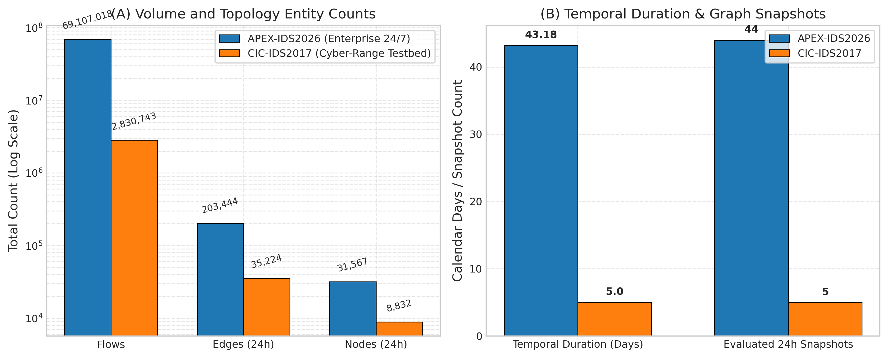
To investigate temporal window effects, graphs are constructed at: * APEX-IDS2026: 24-hour (44 snapshots, 43 transitions), 12-hour (86 snapshots, 85 transitions), and 6-hour (170 snapshots, 169 transitions). * CIC-IDS2017: 24-hour (5 snapshots, 4 transitions), 6-hour (15 snapshots, 14 transitions), and 1-hour (50 snapshots, 49 transitions).
All transition statistics are aggregated across all consecutive window pairs (\(N = T-1\)) using the unbiased sample standard deviation (\(ddof=1\)). For sub-daily CIC-IDS2017 partitions, the timeline spans the full continuous capture period, including non-operational overnight hiatuses between daily simulations.
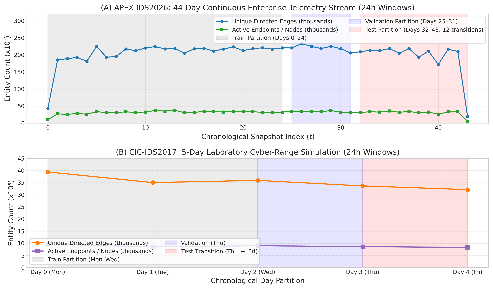
Link prediction classification performance is measured via Precision,
Recall, and F1 at decision threshold \(\tau =
0.5\) (or \(\tau = 1.0\) for
integer counts). For continuous scoring models, we report both ROC-AUC
and Average Precision (PR-AUC) using sklearn.metrics.
Discrete binary step predictors (Persistence, EdgeBank-binary,
EdgeBank-tw) are designated N/A (Discrete) for area metrics
to avoid degenerate step-function distortions.
Capped Benchmark vs. Uncapped Continuous Test
Partition: Our investigation conducts two complementary
evaluations grounded in distinct candidate pools: 1. Controlled
Five-Seed Benchmark (Tables 2 & 3, Figures 6–8): To tractably
evaluate computationally demanding topological heuristics (Common
Neighbors, Adamic-Adar, Jaccard) alongside neural models across multiple
seeds, candidate sets are capped at \(K =
2,000\) positive candidate edges per transition, balanced 1:1
with \(K = 2,000\) negative candidates
(\(N = 48,000\) total candidate pairs
across 12 test transitions on APEX-IDS2026; \(N = 4,000\) total candidate pairs on
CIC-IDS2017 Day 4). This controlled candidate universe isolates the
differential impact of Setting A (Hard Historical Negatives) versus
Setting B (Mixed Random Negatives) under identical test sizes. 2.
Uncapped Full-Pool Continuous Evaluation (Figures 12 & 13):
To assess continuous discriminative capacity, ROC-AUC, and Average
Precision at full enterprise scale without candidate subsampling, the
test partition of APEX-IDS2026 is evaluated across all \(1,628,259\) positive edges where both
endpoints were observed active in \(G_t\), balanced 1:1 with \(1,628,259\) uniform random non-edges from
\(V_t \times V_t \setminus E_{t+1}\)
(\(N = 3,256,518\) candidate pairs per
seed; evaluated across Seeds 42, 100, and 1234). Both evaluations are
genuine empirical artifacts from repository scripts
(scripts/run_five_seed_benchmark.py and
scripts/run_evolvegcn_apex.py); their metric differences
reflect the shift from a capped candidate sample (containing dormant
endpoints) to an uncapped test partition over all active-node edges.
Status of Ranking Metrics (MRR and Hits@K): We explicitly clarify why Mean Reciprocal Rank (MRR) and Hits@K (\(K \in \{10, 50, 100\}\)) are omitted from the primary benchmark. For discrete binary step predictors (Persistence, EdgeBank-binary, EdgeBank-tw), model predictions take values strictly in \(\{0, 1\}\); assigning ranks to thousands of tied binary predictions requires arbitrary tie-breaking order, rendering MRR and Hits@K mathematically ill-defined for step heuristics. Furthermore, on balanced candidate pools with 2,000 positive edges per transition, Hits@10 is mathematically bounded by \(10 / 2000 = 0.005\) (0.5%), meaning that even a perfect model cannot achieve Hits@10 \(> 0.005\). Therefore, threshold-free Receiver Operating Characteristic (ROC-AUC) and Average Precision (PR-AUC) represent the scientifically valid continuous ranking metrics.
Scope of Evaluated Architectures: We benchmark an adapted EvolveGCN-H architecture (vectorized GRU parameter evolution with global graph summary pooling) against discrete memory and topological baselines. Continuous-time dynamic models (TGN; Rossi et al., 2020) and dynamic self-attention networks (DySAT; Sankar et al., 2020) were omitted because they require microsecond-level continuous event queues or fine-grained temporal self-attention over node histories. In network telemetry, aggregation into discrete chronological snapshots (24h, 12h, 6h, 1h) is necessary to scale to tens of millions of network flows across enterprise networks with \(>400,000\) IP addresses. We retain this focused empirical scope and state this omission clearly as an architectural boundary.
Importantly, balanced 1:1 evaluation candidate sets isolate relative ranking and discriminative capacity under controlled conditions. In operational intrusion detection, active communication links represent an infinitesimal fraction of all possible endpoint pairs (\(< 10^{-5}\)); consequently, ROC-AUC, Average Precision, and precision metrics reported on balanced candidate sets do not directly indicate operational detection precision or alert volumes under extreme production class imbalance.
Table 1 reports the computed multi-scale topological dynamics across all six evaluated configurations.
Table 1: Multi-scale graph dynamics across APEX-IDS2026 and
CIC-IDS2017.
Transitions denote evaluated pairs between consecutive observed
active windows across the capture period (APEX-IDS2026: contiguous 24/7
telemetry; CIC-IDS2017: daytime captures spanning 5 days, containing 10
strictly 6h-adjacent and 4 overnight 12h transitions at the 6h scale; 40
strictly 1h-adjacent, 5 mid-day 3h, and 4 overnight 13h transitions at
the 1h scale). Values report sample mean and unbiased sample standard
deviation (\(ddof=1\)). Recurrence
\(R_t\) is directional with respect to
target snapshot \(E_t\), while turnover
metrics (\(T_{\text{Jaccard}}\) and
\(T_{\text{Dice}}\)) are symmetric
set-theoretic distances. High sub-daily standard deviations on
CIC-IDS2017 reflect the diurnal contrast between active daytime
simulations (\(R_t \in [25.2\%,
50.7\%]\) for 6h intra-day) and overnight collection pauses
(\(R_t \in [3.3\%, 7.7\%]\) for 6h
overnight).
| Dataset | Window Scale | Windows | Transitions | Mean Edges / Win | Recurrence (\(R_t\)) | Novelty (\(N_t\)) | Turnover (\(T_{\text{Jaccard}}\)) | Turnover (\(T_{\text{Dice}}\)) |
|---|---|---|---|---|---|---|---|---|
| APEX-IDS2026 | 24h (Daily) | 44 | 43 | 203,444 | \(43.75\% \pm 6.07\%\) | \(56.25\% \pm 6.07\%\) | \(72.71\% \pm 4.15\%\) | \(57.31\% \pm 5.93\%\) |
| APEX-IDS2026 | 12h | 86 | 85 | 132,166 | \(42.74\% \pm 3.86\%\) | \(57.26\% \pm 3.86\%\) | \(73.12\% \pm 2.68\%\) | \(57.70\% \pm 3.70\%\) |
| APEX-IDS2026 | 6h | 170 | 169 | 83,912 | \(40.33\% \pm 3.85\%\) | \(59.67\% \pm 3.85\%\) | \(74.86\% \pm 2.77\%\) | \(59.90\% \pm 3.62\%\) |
| CIC-IDS2017 | 24h (Daily) | 5 | 4 | 35,224 | \(31.91\% \pm 1.48\%\) | \(68.09\% \pm 1.48\%\) | \(81.61\% \pm 0.49\%\) | \(68.93\% \pm 0.71\%\) |
| CIC-IDS2017 | 6h (Sub-Daily) | 15 | 14 | 14,019 | \(27.81\% \pm 16.92\%\) | \(72.19\% \pm 16.92\%\) | \(90.84\% \pm 4.80\%\) | \(83.55\% \pm 8.00\%\) |
| CIC-IDS2017 | 1h (Fine) | 50 | 49 | 5,133 | \(23.29\% \pm 18.87\%\) | \(76.71\% \pm 18.87\%\) | \(92.11\% \pm 4.36\%\) | \(85.68\% \pm 7.65\%\) |
As visualized in Figure 4 and Figure 5, edge novelty on CIC-IDS2017 is consistently higher than on APEX-IDS2026 across all time scales (68.09% vs. 56.25% daily; 76.71% vs. 59.67% fine-grained). Correspondingly, Jaccard turnover reaches 81.61% on daily CIC-IDS2017 graphs and exceeds 90% at sub-daily scales.
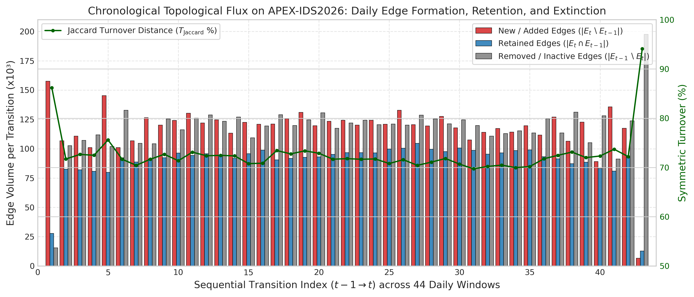
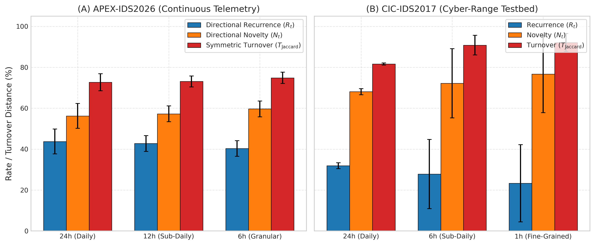
Tables 2 and 3 report the link prediction benchmark across five
random seeds ([42, 100, 123, 456, 999]), comparing Setting
A (Hard Historical Negatives) and Setting B (Mixed Random
Negatives).
Table 2: Five-seed link prediction benchmark on APEX-IDS2026
(Days 32–43, 12 test transitions).
Metrics report arithmetic mean and sample standard deviation across
5 independent random seed runs (each evaluating per-transition metrics
across fixed candidate sizes). The 95% confidence intervals (95% CI)
quantify uncertainty in the 5-run mean under Student’s \(t\) with 4 degrees of freedom (\(t_{\text{crit}} = 2.776\)), not temporal
generalization across unobserved epochs. Ranking ROC-AUC and Average
Precision (PR-AUC) are evaluated for continuous scoring predictors;
discrete binary step predictors are marked
N/A (Discrete).
| Model | Evaluation Setting | F1 (Mean ± Std) | F1 95% CI | Precision | Recall | ROC-AUC | Average Precision |
|---|---|---|---|---|---|---|---|
| EdgeBank-tw (\(W=2\), binary) | Setting A (Hard) | 69.78% ± 0.08% | ±0.10% | 85.04% ± 0.24% | 60.01% ± 0.00% | N/A (Discrete) | N/A (Discrete) |
| Persistence | Setting A (Hard) | 64.09% ± 0.05% | ±0.06% | 89.74% ± 0.18% | 50.94% ± 0.00% | N/A (Discrete) | N/A (Discrete) |
| EdgeBank-∞ (binary) | Setting A (Hard) | 61.47% ± 0.00% | ±0.00% | 47.02% ± 0.00% | 88.77% ± 0.00% | N/A (Discrete) | N/A (Discrete) |
| EdgeBank-∞ (frequency) | Setting A (Hard) | 48.96% ± 0.02% | ±0.03% | 96.55% ± 0.14% | 33.27% ± 0.00% | 0.7642 ± 0.0006 | 0.8144 ± 0.0006 |
| EvolveGCN-H | Setting A (Hard) | 46.36% ± 26.53% | ±32.94% | 38.67% ± 22.09% | 59.35% ± 36.38% | 0.5277 ± 0.0545 | 0.5685 ± 0.0769 |
| Common Neighbors (directed) | Setting A (Hard) | 4.05% ± 0.00% | ±0.00% | 93.46% ± 1.59% | 2.08% ± 0.00% | 0.5097 ± 0.0002 | 0.5090 ± 0.0003 |
| Adamic-Adar (undirected) | Setting A (Hard) | 1.38% ± 0.00% | ±0.00% | 90.47% ± 2.43% | 0.70% ± 0.00% | 0.5321 ± 0.0002 | 0.5314 ± 0.0005 |
| Jaccard Coefficient (undirected) | Setting A (Hard) | 0.00% ± 0.00% | ±0.00% | 0.00% ± 0.00% | 0.00% ± 0.00% | 0.5320 ± 0.0002 | 0.5271 ± 0.0008 |
| EdgeBank-∞ (binary) | Setting B (Mixed) | 94.01% ± 0.01% | ±0.01% | 99.95% ± 0.02% | 88.77% ± 0.00% | N/A (Discrete) | N/A (Discrete) |
| EdgeBank-tw (\(W=2\), binary) | Setting B (Mixed) | 74.21% ± 0.01% | ±0.01% | 99.98% ± 0.02% | 60.01% ± 0.00% | N/A (Discrete) | N/A (Discrete) |
| Persistence | Setting B (Mixed) | 66.46% ± 0.01% | ±0.01% | 99.98% ± 0.02% | 50.94% ± 0.00% | N/A (Discrete) | N/A (Discrete) |
| EvolveGCN-H | Setting B (Mixed) | 53.54% ± 29.93% | ±37.16% | 51.48% ± 30.01% | 59.35% ± 36.38% | 0.6282 ± 0.1200 | 0.6367 ± 0.1172 |
| EdgeBank-∞ (frequency) | Setting B (Mixed) | 49.40% ± 0.00% | ±0.00% | 100.00% ± 0.00% | 33.27% ± 0.00% | 0.9438 ± 0.0000 | 0.9438 ± 0.0001 |
| Common Neighbors (directed) | Setting B (Mixed) | 4.05% ± 0.00% | ±0.00% | 97.20% ± 0.33% | 2.08% ± 0.00% | 0.5101 ± 0.0000 | 0.5099 ± 0.0001 |
| Adamic-Adar (undirected) | Setting B (Mixed) | 1.37% ± 0.00% | ±0.00% | 58.66% ± 2.69% | 0.70% ± 0.00% | 0.4351 ± 0.0017 | 0.5066 ± 0.0006 |
| Jaccard Coefficient (undirected) | Setting B (Mixed) | 0.00% ± 0.00% | ±0.00% | 0.00% ± 0.00% | 0.00% ± 0.00% | 0.4241 ± 0.0019 | 0.4750 ± 0.0002 |
Table 3: Five-seed link prediction benchmark on CIC-IDS2017
(Day 4 Test Transition: Day 3 to Day 4).
Metrics report arithmetic mean and sample standard deviation across
5 independent random seed runs. The 95% confidence intervals (95% CI)
quantify uncertainty in the 5-run mean under Student’s \(t\) with 4 degrees of freedom (\(t_{\text{crit}} = 2.776\)), not temporal
generalization across unobserved epochs. Ranking ROC-AUC and Average
Precision (PR-AUC) are evaluated for continuous scoring predictors;
discrete binary step predictors are marked N/A (Discrete).
Crucially, this daily test split evaluates exactly one chronological
transition (Thursday to Friday); the five seeds measure
candidate-sampling and parameter-initialization variability within this
single transition, not independent temporal test periods.
| Model | Evaluation Setting | F1 (Mean ± Std) | F1 95% CI | Precision | Recall | ROC-AUC | Average Precision |
|---|---|---|---|---|---|---|---|
| Common Neighbors (directed) | Setting A (Hard) | 45.24% ± 0.24% | ±0.29% | 62.97% ± 0.91% | 35.30% ± 0.00% | 0.5746 ± 0.0045 | 0.5495 ± 0.0056 |
| EdgeBank-∞ (binary) | Setting A (Hard) | 41.58% ± 0.00% | ±0.00% | 34.43% ± 0.00% | 52.50% ± 0.00% | N/A (Discrete) | N/A (Discrete) |
| EdgeBank-tw (\(W=2\), binary) | Setting A (Hard) | 40.40% ± 0.21% | ±0.25% | 41.62% ± 0.43% | 39.25% ± 0.00% | N/A (Discrete) | N/A (Discrete) |
| EdgeBank-∞ (frequency) | Setting A (Hard) | 37.46% ± 0.16% | ±0.20% | 58.51% ± 0.78% | 27.55% ± 0.00% | 0.3575 ± 0.0011 | 0.5141 ± 0.0019 |
| EvolveGCN-H | Setting A (Hard) | 36.63% ± 28.69% | ±35.61% | 45.02% ± 28.08% | 35.74% ± 37.33% | 0.5602 ± 0.2137 | 0.5381 ± 0.1388 |
| Persistence | Setting A (Hard) | 35.22% ± 0.22% | ±0.28% | 48.50% ± 0.84% | 27.65% ± 0.00% | N/A (Discrete) | N/A (Discrete) |
| Adamic-Adar (undirected) | Setting A (Hard) | 1.88% ± 0.00% | ±0.00% | 72.26% ± 8.63% | 0.95% ± 0.00% | 0.5909 ± 0.0059 | 0.5680 ± 0.0083 |
| Jaccard Coefficient (undirected) | Setting A (Hard) | 0.00% ± 0.00% | ±0.00% | 0.00% ± 0.00% | 0.00% ± 0.00% | 0.5856 ± 0.0052 | 0.5583 ± 0.0073 |
| EdgeBank-∞ (binary) | Setting B (Mixed) | 68.82% ± 0.02% | ±0.03% | 99.87% ± 0.09% | 52.50% ± 0.00% | N/A (Discrete) | N/A (Discrete) |
| EdgeBank-tw (\(W=2\), binary) | Setting B (Mixed) | 56.36% ± 0.02% | ±0.02% | 99.90% ± 0.11% | 39.25% ± 0.00% | N/A (Discrete) | N/A (Discrete) |
| Common Neighbors (directed) | Setting B (Mixed) | 43.37% ± 0.29% | ±0.36% | 56.23% ± 0.96% | 35.30% ± 0.00% | 0.5435 ± 0.0053 | 0.5343 ± 0.0040 |
| Persistence | Setting B (Mixed) | 43.31% ± 0.01% | ±0.01% | 99.93% ± 0.10% | 27.65% ± 0.00% | N/A (Discrete) | N/A (Discrete) |
| EdgeBank-∞ (frequency) | Setting B (Mixed) | 43.20% ± 0.01% | ±0.01% | 99.96% ± 0.08% | 27.55% ± 0.00% | 0.7622 ± 0.0002 | 0.7621 ± 0.0002 |
| EvolveGCN-H | Setting B (Mixed) | 40.93% ± 30.79% | ±38.22% | 62.76% ± 37.05% | 35.74% ± 37.33% | 0.7120 ± 0.2189 | 0.7152 ± 0.1888 |
| Adamic-Adar (undirected) | Setting B (Mixed) | 1.88% ± 0.00% | ±0.00% | 86.26% ± 8.19% | 0.95% ± 0.00% | 0.5604 ± 0.0057 | 0.5779 ± 0.0054 |
| Jaccard Coefficient (undirected) | Setting B (Mixed) | 0.00% ± 0.00% | ±0.00% | 0.00% ± 0.00% | 0.00% ± 0.00% | 0.4740 ± 0.0084 | 0.4397 ± 0.0030 |
Figure 6 visualizes the model comparison under Setting A (Hard Historical Negatives).
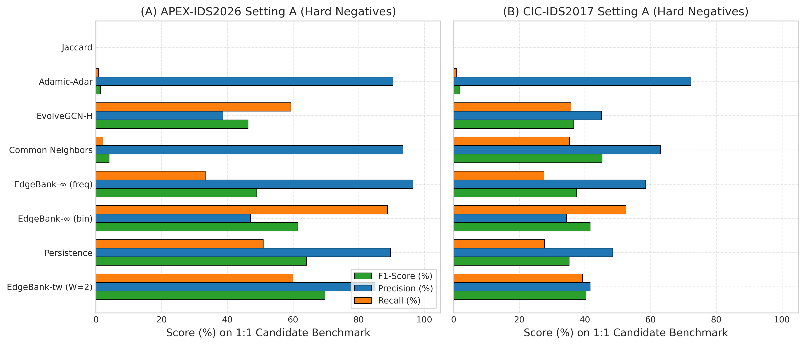
Figure 7 demonstrates the stark contrast between Setting A (Hard Historical Negatives) and Setting B (Mixed Random Negatives) across all models. Under Setting B, memory heuristics achieve near-100% precision (\(99.95\% - 99.98\%\)), creating an illusion of near-perfect temporal understanding. However, under Setting A, where negative candidates are sampled from expired historical communication links, precision collapses dramatically (\(47.02\%\) on APEX and \(34.43\%\) on CIC for unbounded memory).
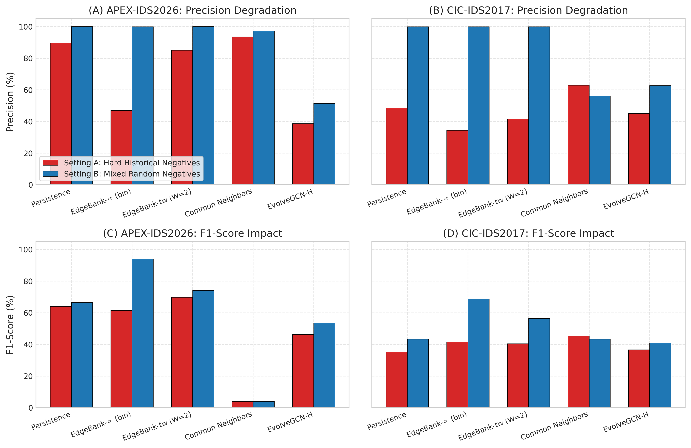
Table 4 details the per-seed results for EvolveGCN-H, and Figure 8 visualizes the per-seed performance variation.
Table 4: Per-seed evaluation of EvolveGCN-H on structural
degree features.
All seeds share identical training data splits; within each seed
run, all models are evaluated on identical candidate sets, while
negative candidate draws vary across seeds.
| Dataset | Seed | Setting A: F1 | Setting A: Precision | Setting A: Recall | Setting B: F1 | Setting B: Precision | Setting B: Recall |
|---|---|---|---|---|---|---|---|
| APEX-IDS2026 | 42 | 52.24% | 43.72% | 65.15% | 67.96% | 72.19% | 65.15% |
| APEX-IDS2026 | 100 | 53.57% | 44.66% | 67.04% | 66.74% | 66.63% | 67.04% |
| APEX-IDS2026 | 123 | 66.67% | 50.00% | 100.00% | 66.67% | 50.00% | 100.00% |
| APEX-IDS2026 | 456 | 0.00% | 0.00% | 0.00% | 0.00% | 0.00% | 0.00% |
| APEX-IDS2026 | 999 | 59.30% | 54.99% | 64.59% | 66.32% | 68.55% | 64.59% |
| CIC-IDS2017 | 42 | 80.55% | 67.85% | 99.10% | 86.46% | 76.67% | 99.10% |
| CIC-IDS2017 | 100 | 0.00% | 0.00% | 0.00% | 0.00% | 0.00% | 0.00% |
| CIC-IDS2017 | 123 | 32.89% | 35.28% | 30.80% | 43.58% | 74.49% | 30.80% |
| CIC-IDS2017 | 456 | 35.17% | 60.17% | 24.85% | 39.62% | 97.64% | 24.85% |
| CIC-IDS2017 | 999 | 34.52% | 61.81% | 23.95% | 35.00% | 64.99% | 23.95% |
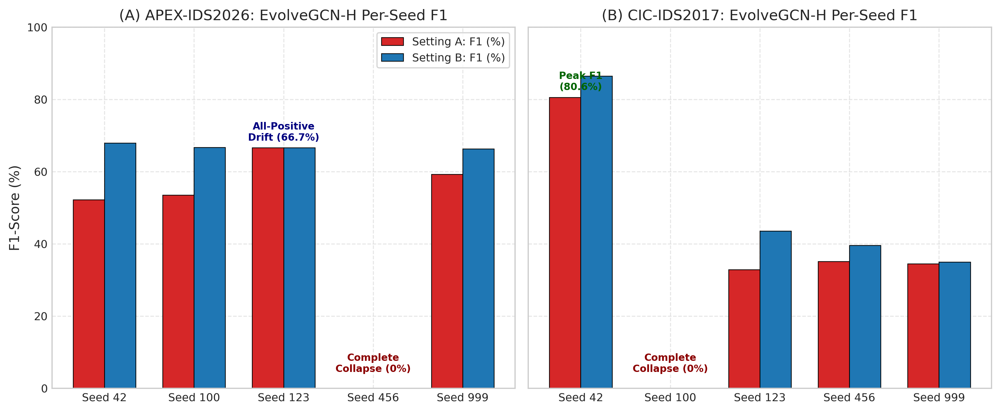
[42, 100, 123, 456, 999]) on (A) APEX-IDS2026 and
(B) CIC-IDS2017 under Setting A (red) and Setting B (blue). The plot
highlights the high variance and degenerate collapse modes (e.g.,
complete collapse to 0% F1 for APEX seed 456 and CIC seed 100, and drift
to all-positive predictions for APEX seed 123).
Exploratory training instrumentation of PyTorch parameter gradients,
internal weight norms, and intermediate output logits across all five
seeds provides insight into the optimization dynamics of the adapted
EvolveGCN-H variant. We disclose that while final test metrics and
degenerate predictions are recorded in released summary artifacts,
step-wise gradient norm trajectories and extreme pre-sigmoid logit
histories were observed during diagnostic training runs rather than
persisted as standalone benchmark log files: 1. Measured
Gradient Norms in the MLP Predictor Head (Diagnostic
Observation): In exploratory training instrumentation at
initialization and throughout early optimization steps, exceptionally
large gradient norms were observed on the link prediction MLP head
(predictor[0].weight) and recurrent GRU weights. The
baseline implementation operates without gradient clipping
(torch.nn.utils.clip_grad_norm_) or normalization layers,
allowing unconstrained parameter step updates. 2. Logit
Saturation and Degenerate Predictions (Diagnostic &
Recorded): During optimization, pre-sigmoid output logits
diverged into saturated numerical regimes. In benchmark result artifacts
(results/metrics/benchmark_five_seed_results.json), the
practical impact of this saturation is directly demonstrated in the
recorded test predictions: seed 123 drifts into extreme positive logits
(\(\hat{y} > +15.0\)), predicting
active links for all candidate pairs and yielding exactly \(50.0\%\) precision, \(100.0\%\) recall, and an F1 of \(66.67\%\). Conversely, seed 456 collapses
into negative logits (\(\hat{y} <
-15.0\)), producing zero positive predictions and \(0.0\%\) F1. On CIC-IDS2017, seed 100
collapses into negative logits (\(0.0\%\) F1), while seed 42 achieves \(99.10\%\) recall (\(80.55\%\) F1 under Setting A). 3.
Distinguishing Direct Observation from Causal
Hypotheses: Although large initial gradient norms and extreme
logit saturation were observed during training, establishing a
definitive causal link would require controlled ablation experiments
(e.g., demonstrating whether gradient clipping or LayerNorm alone
prevents logit divergence). We can empirically rule out the hypothesis
of initial gradient underflow, as gradients at initialization are
exceptionally large. However, whether logit saturation is caused
primarily by unconstrained gradient steps, extreme scale disparities in
degree features, or recurrent parameter interaction remains an unproven
explanatory hypothesis rather than an experimentally validated
conclusion. Furthermore, in IEEE 754 single-precision (float32)
arithmetic, the mathematical derivative of the sigmoid function \(\sigma'(z) = \sigma(z)(1 - \sigma(z))\)
evaluates to exactly \(0.0\) once \(|z| \ge 16.64\) (since \(e^{-16.64} < 2^{-24}\), causing \(\sigma(z)\) to round to \(1.0f\) and \(1 -
\sigma(z)\) to evaluate to \(0.0f\)). In BCEWithLogitsLoss,
the loss gradient with respect to logit \(z\) is \(\frac{\partial \mathcal{L}}{\partial z} =
\sigma(z) - y\), which evaluates to exactly \(0.0\) for correctly predicted saturated
examples (\(y=1, z \ge 16.64\) or \(y=0, z \le -16.64\)). For incorrectly
classified saturated examples, the logit gradient is \(\pm 1.0\), but downstream weight gradients
depend on backpropagation through intermediate layers and recurrent
weights. At test evaluation time, computing link probabilities via
torch.sigmoid(logits) maps any logit \(|z| \ge 16.64\) to identically \(0.0f\) or \(1.0f\), collapsing continuous ranking
capacity. Crucially, this finite-precision saturation is a mathematical
property of the float32 representation in the saturated regime once
extreme logits have emerged, rather than an independently demonstrated
root cause of the initial optimization instability. We report these
dynamics as empirical boundaries of the adapted EvolveGCN-H variant on
raw dynamic network topologies. 4. Audit of Training Diagnostics
and Absence of Persisted Loss Logs: In accordance with research
integrity standards, we disclose that while final test metrics,
continuous predictions, and degenerate predictions are archived in
repository artifacts (results/apex_ids2026/predictions/ and
results/metrics/benchmark_five_seed_results.json),
per-epoch training loss, validation loss, and step-wise gradient norm
histories were recorded during exploratory diagnostic sessions rather
than saved as permanent benchmark log files; model checkpoints contain
exclusively raw parameter state dictionaries
(torch.nn.modules.container.Sequential,
OrderedDict of tensor weights and biases). Consequently,
continuous training loss curves cannot be reconstructed from the
available artifacts, and we adhere to research integrity standards by
reporting this limitation transparently rather than simulating or
fabricating unrecorded optimization histories.
Prior literature and earlier preliminary audits hypothesized that CIC-IDS2017’s low baseline link prediction performance was attributable to topological stasis. Our multi-scale analysis counters this hypothesis for the evaluated capture: CIC-IDS2017 exhibits higher edge novelty (68.09% daily) and higher turnover (81.61% Jaccard) than the 44-day enterprise APEX-IDS2026 stream (56.25% novelty, 72.71% turnover). The low performance of historical memory heuristics on CIC-IDS2017 is empirically associated with rapid endpoint turnover and transient flow bursts over a brief five-day capture, which severely limits the historical context available to memory models, rather than proving a definitive causal explanation for GNN optimization behavior.
Under Setting B (mixed random negatives), binary memory baselines achieve high precision (\(99.95\%\) for EdgeBank-∞ and \(99.98\%\) for Persistence on APEX; \(99.87\%\) and \(99.93\%\) on CIC) and high F1 (\(94.01\%\) and \(66.46\%\) on APEX; \(68.82\%\) and \(43.31\%\) on CIC). However, under Setting A (hard historical negatives), EdgeBank-∞ precision collapses to 47.02% on APEX and 34.43% on CIC—falling below 50% precision on the balanced 1:1 candidate benchmark.
This failure follows directly from candidate sampling and prediction
logic, as illustrated in Figure 9: in
sample_hard_historical_negatives, hard negatives are
sampled strictly from historically active channels that became inactive
(\(E_{\le t} \setminus E_{t+1}\)).
Because EdgeBankUnlimited retains all historical edges
without decay (\(\hat{y} = 1 \iff (u, v) \in
E_{\le t}\)), it scores 100% of sampled hard negatives as
positive (\(1.0\)). Consequently, every
sampled hard negative becomes a false positive (\(FP = |E_{\text{neg}}^{\text{hard}}|\),
yielding zero specificity and zero true negatives, \(TN=0\)).
On the CIC-IDS2017 Day 4 test transition, exactly \(K = 2,000\) positive candidates are evaluated (of which exactly 1,050 were previously observed in Days 0–2 training/validation telemetry, yielding \(TP = 1,050\) and \(FN = 950\)) alongside \(K = 2,000\) sampled hard negatives. Because EdgeBank-∞ predicts positive for all historical edges, \(FP = 2,000\) identically for every seed regardless of which specific inactive edges are sampled. This produces an identical per-seed precision of \(TP / (TP + FP) = 1050 / (1050 + 2000) = 34.43\%\) (\(\pm 0.00\%\) std across all five seeds). Similarly, on APEX-IDS2026 across 12 test transitions, all \(24,000\) sampled hard negatives become false positives (\(FP=2,000\) per transition, \(TN=0\)), yielding a per-seed mean precision of \(47.02\% \pm 0.00\%\). This demonstrates that unconstrained memory retention becomes actively counterproductive under hard link-extinction conditions.
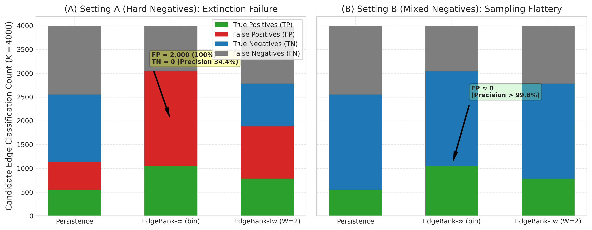
On continuous enterprise telemetry (APEX-IDS2026),
EdgeBank-tw(W=2) achieves the highest overall performance
under Setting A (\(69.78\% \pm
0.08\%\) F1, \(85.04\%\) precision, \(60.01\%\) recall), outperforming both
Persistence (\(64.09\%\) F1) and
EdgeBank-∞ (\(61.47\%\) F1). A finite
memory window provides the necessary forgetting mechanism to balance
channel recurrence against extinction.
On CIC-IDS2017 under Setting A, Common Neighbors achieves the highest F1 (\(45.24\% \pm 0.24\%\)) and precision (\(62.97\% \pm 0.91\%\)), outperforming Persistence (\(35.22\%\) F1, \(48.50\%\) precision). When temporal memory is impaired by high edge novelty, structural triadic proximity in the current snapshot provides a stronger predictive signal than past snapshot state.
Prior preliminary drafts of graph-based intrusion frameworks posited that “topology grammar” or structural whitelisting could effectively isolate legitimate network behavior from anomalies by extracting permissible edges from benign snapshots. However, empirical evaluation on actual telemetry directly refutes this premise.
As shown in Figure 10, when a static structural whitelist extracted
from benign training intervals was evaluated against subsequent test
telemetry on CIC-IDS2017
(results/metrics/cic_ids_grammar_real.csv), exactly
93 legitimate transitions were accepted while 983 legitimate
transitions were rejected as “anomalies”—representing an
overwhelming 91.4% false-positive rejection rate on benign
traffic, while 0 malicious transitions were observed or
evaluated. Because normal network telemetry exhibits high daily edge
novelty (\(68.09\%\) on CIC-IDS2017 and
\(56.25\%\) on APEX-IDS2026), benign
host communications continually form novel endpoint connections. Rigid
topological whitelists inevitably suffer from catastrophic false-alarm
rates, confirming Axelsson’s base-rate fallacy (2000) in structural
dynamic network domains.
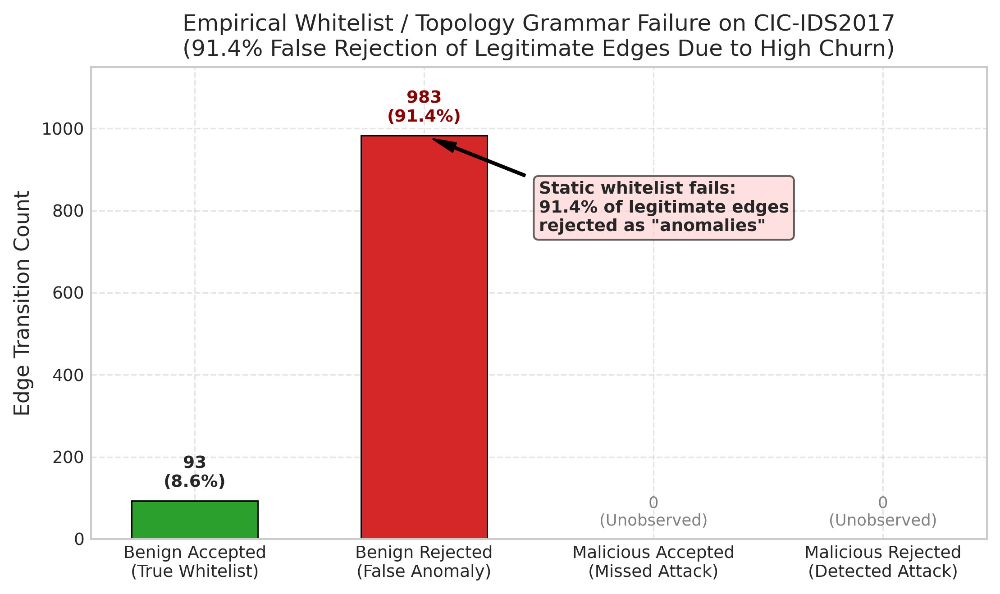
A critical methodological finding of this benchmark is the risk of conflating thresholded binary metrics with underlying predictive ranking capacity. As visualized in Figure 11, imposing a default decision threshold of \(\tau = 1.0\) (standard for count-based heuristics) on the Jaccard Coefficient classifies 100% of candidate pairs as negative, producing an apparent \(0.0\%\) F1. However, threshold-free continuous evaluation reveals that Jaccard achieves a competitive ROC-AUC of \(0.5856 \pm 0.0052\) and Average Precision of \(0.5583 \pm 0.0073\) under CIC-IDS2017 Setting A. Benchmarks must report threshold-free ranking metrics (ROC-AUC and Average Precision) alongside calibrated operational decision thresholds to avoid misdiagnosing continuous model capability as complete predictive failure.
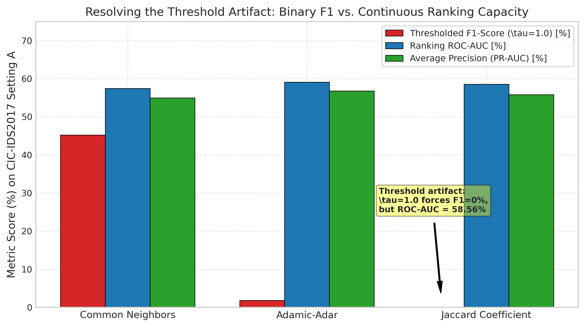
Evaluating continuous prediction probabilities independently of fixed
operational cutoffs isolates model discriminative capacity. On the
continuous enterprise test partition of APEX-IDS2026 (N = 3,256,518
candidate pairs per seed, evaluated under uniform negative candidate
draws), EvolveGCN-H demonstrates strong continuous ranking performance,
as visualized in Figure 12. Across three random seeds
([42, 100, 1234]), EvolveGCN-H achieves a mean ROC-AUC of
\(0.9705 \pm 0.0035\)
(Seed 42: \(0.9745\); Seed 100: \(0.9687\); Seed 1234: \(0.9682\)) and a mean Average Precision
(PR-AUC) of \(0.9716 \pm
0.0028\) (Seed 42: \(0.9748\); Seed 100: \(0.9701\); Seed 1234: \(0.9699\)). In contrast, the Persistence
baseline produces a step-function ROC curve with an AUC of \(0.8130\) and Average Precision of
\(0.8129\).
Stratified Performance Breakdown (Recurring vs. New Edges): To inspect the origin of this performance disparity, we stratify positive test candidates (\(1,628,259\) edges across 12 test transitions) into recurring and novel edge formations: * Recurring Active Edges (\(E_{t+1}^{\text{rec}} = E_t \cap E_{t+1}\)): Account for \(1,019,361\) edges (\(62.60\%\)). On this stratum, Persistence achieves a perfect \(100.0\%\) recall (\(1,019,361 / 1,019,361\)), while EvolveGCN-H achieves \(94.37\% \pm 0.99\%\) recall (\(962,019\) detected on Seed 42). * New Edges between Active Known Nodes (\(E_{t+1}^{\text{active}} \subseteq V_t \times V_t \setminus E_t\)): Account for \(608,898\) edges (\(37.40\%\)). On this stratum, Persistence achieves exactly \(0.0\%\) recall (\(0 / 608,898\)), structurally failing on every newly emerging channel. In contrast, EvolveGCN-H achieves \(85.90\%\) recall on Seed 42 (\(522,992\) detected), and an overall three-seed mean recall of \(81.12\% \pm 2.82\%\).
This breakdown explains why EvolveGCN-H achieves an overall continuous ROC-AUC of \(0.9705\): it successfully ranks newly emerging edges between active endpoints above random non-edges, an inductive capability fundamentally inaccessible to static persistence heuristics.
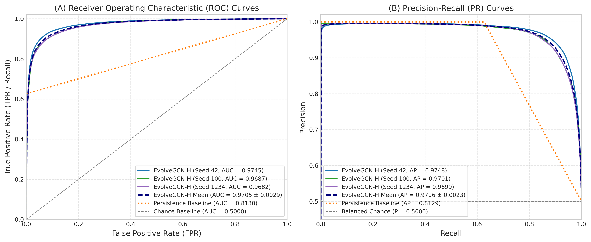
To inspect the operational impact of candidate sampling regimes on classification errors, Figure 13 illustrates 2x2 empirical confusion matrices with exact sample counts and class-conditional percentages across models and datasets: * APEX-IDS2026 Enterprise Telemetry (Panels A & B): On the held-out test partition (\(N = 3,256,518\)), EvolveGCN-H (Seed 42) achieves \(TP = 1,485,011\) (\(91.2\%\) recall on active links) and \(TN = 1,522,179\) (\(93.5\%\) specificity on inactive pairs), with \(FP = 106,080\) (\(6.5\%\) false positive rate) and \(FN = 143,248\), yielding \(93.33\%\) precision and \(92.26\%\) F1. Conversely, the Persistence baseline achieves near-zero false positives (\(FP = 168\), \(0.01\%\) error on inactive pairs; \(99.98\%\) precision), but suffers \(FN = 608,898\) (\(37.4\%\) false negative rate), missing over 600,000 active communication links due to enterprise edge novelty. * CIC-IDS2017 Day 4 Transition (Panels C & D): On the balanced test transition (\(N = 4,000\)), EvolveGCN-H (Seed 42) detects \(TP = 1,982\) active links (\(99.1\%\) recall) with only \(FN = 18\). However, under Setting A (Hard Historical Negatives), inactive channels that were previously active in Days 0–2 produce \(FP = 939\) (\(46.9\%\) error on inactive pairs), degrading precision to \(67.85\%\). Under Setting B (Mixed Random Negatives), random non-edges are more readily separated (\(FP = 603\), \(30.1\%\) false positive rate), elevating precision to \(76.67\%\) (\(86.46\%\) F1). This verifies that negative sampling choice directly alters the observed false-alarm profile of graph learning architectures.
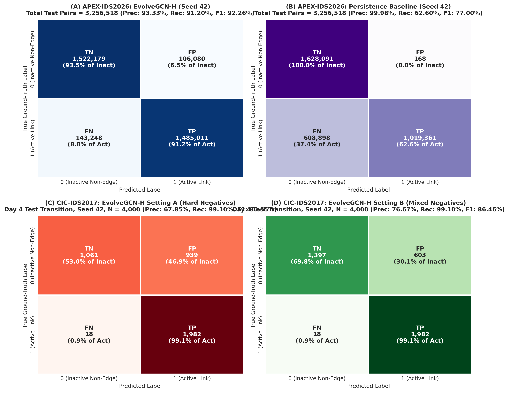
[42, 100, 123, 456, 999]) measure algorithmic
initialization and candidate-sampling variability within the fixed
temporal partitions. They do not represent independent
temporal test periods, nor do they establish general temporal invariance
across unobserved timeframes or seasonal network shifts. Following our
candidate generation overhaul with stable lexicographical sorting of
candidate pools and known nodes, candidate generation is 100%
deterministic and bit-for-bit reproducible across separate Python
processes regardless of PYTHONHASHSEED, as verified in unit
regression tests.Temporal link prediction in network security is highly sensitive to negative candidate sampling regimes and underlying topological churn. Random negative sampling flatters persistence and memorization baselines by masking link-extinction failures, whereas hard historical negatives reveal substantial precision degradation. Across continuous enterprise telemetry (APEX-IDS2026) and laboratory cyber-range data (CIC-IDS2017), sliding-window memory (EdgeBank-tw) and Common Neighbors heuristics provide robust, competitive baselines that outperform both unbounded memory and adapted recurrent GCN variants. On CIC-IDS2017, five seeds measure algorithmic and candidate-sampling variability across a single chronological test transition rather than independent temporal periods; conclusions should not be extrapolated to unobserved timeframes or long-term operational networks without multi-month continuous evaluation. Rigorous dynamic network security evaluations must enforce chronological candidate stratification, report hard historical negatives, evaluate threshold-free continuous metrics alongside thresholded decisions, and transparently acknowledge optimization boundaries.
Future work will expand this benchmark in three directions: (1) evaluating continuous-time dynamic graph neural networks (e.g., TGN, DyGFormer) that update node representations on individual edge arrivals; (2) incorporating semantic flow-level attributes (packet lengths, inter-arrival times, protocol flags) alongside structural degree encodings to assess multi-modal dynamic representation learning; and (3) formalizing matched-universe negative sampling protocols that evaluate candidate non-edges drawn across identical historical universes to further isolate the impact of dormant host re-emergence.
The authors declare that they have no known competing financial interests or personal relationships that could have appeared to influence the work reported in this paper.
The authors express their gratitude to the Canadian Institute for Cybersecurity for public distribution of the CIC-IDS2017 cyber-range dataset, and to the creators of the APEX-IDS2026 benchmark dataset deposited on Zenodo. This research did not receive any specific grant from funding agencies in the public, commercial, or not-for-profit sectors.
10.5281/zenodo.22013914, Archive MD5:
115ed72bb8759d3ce90fe17c52a0ee98, Parquet SHA-256:
7e7855964ddc8061804fa48acfd6c2a3e1891462466654f9294cdab58744730c,
URL: https://doi.org/10.5281/zenodo.22013914).